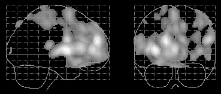
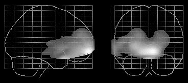

,
David Brooks, John
Stein
,
David Brooks, John
Stein
,
David Brooks, John
Stein
MRC Cyclotron
Unit,London, UK
Methods
Each study consisted of an initial transmission scan, followed by 12
emission scans. Images were reconstructed from sinograms by filtered back
projection, after attenuation correction using the transmission data. Each
experiment used H2O15 bolus injection; condition order was randomized.
Study 1, from the MRC Cyclotron Unit, using an ECAT 953B scanner, compared
rest to the performance of unfamiliar hand gestures in seven subjects.
Study 2, from the Functional Imaging Laboratory ECAT Exact HR+ scanner,
compared rest to word listening and repetition, with 8 subjects. Study
3 was from the Wolfson Brain Imaging Centre in Cambridge, using a GE Advance
scanner, comparing memory encoding and retrieval tasks in seven subjects.
We used the current alpha version of SPM98 for realignment of images. After
realignment, we derived realignment parameters for the images for each
subject in terms of translations and rotations from the first image, with
the origin at the anterior commisure. To investigate the effect of mismatch
between the emission and transmission scans, we generated simulated data
for each subject in study 1 thus: the first scan in the session was reconstructed
without attenuation correction. Using the realignment parameters above,
we resliced this image into the space of the second, third etc. image in
the session. The resliced images were then forward projected into sinograms,
transmission attenuation correction was applied, and the simulated, attenuation
corrected sinograms were back projected into images. Statistics were from
SPM96. For each analysis, the full experimental design was modeled. Linear
time effects were modeled with scan order as a covariate.
Results
Signal changes which covaried with scan order were similar in position
and extent across studies. There were widespread increases in gray and
white matter frontally, and decreases in the occipital regions. Changes
are shown for study 1 in figure 1. The effects were highly significant
after correction for multiple comparisons. Three of the six movement parameters
were strongly positively correlated with scan order (pitch, yaw and y translation,
p<0.001) reflecting a consistent movement of the head over the scanning
session across subjects and studies. Brain areas showing significant changes
related to movement parameters (assessed with the F map) were similar to
those related to scan order. Inclusion of the movement parameters in the
statistical model for each study caused dramatic reductions on the variance
explained by scan order, without equivalent reductions in the effects of
activation condition. Adding scan order to a statistical model that already
included the movement parameters caused a much smaller reduction in the
variance explained by the movement parameters.
Analysis of the simulated images from study 1 was designed to show that scan order effects could be reproduced by applying the initial transmission data to emission scans which had moved out of alignment. As predicted, the simulated data also showed highly significant scan order effects, in a similar position to those found in the original images (figure 2).
|  |
| Figure 1: Study 1, signal increases over scanning session |
|  |
| Figure2: Simulated data, increases over scanning session |
Discussion
Scan order effects in PET activation studies were consistent across
three very different datasets. The position of the effects, which are as
prevalent in white as in gray matter, and confluent, suggest that they
are not likely to reflect changes in regional blood flow. The strong relationship
between scan order and movement parameters raised the possibility that
the effects may be movement rather than time related. The fact that the
variance explained by scan order was greatly reduced by inclusion of movement
parameters in the statistical model, when there was not an equivalent reduction
for the movement parameters when scan order was included, suggests that
the movement parameters are a better model of the effect than scan order.
The simulated data study showed that the scan order effect can be reproduced
merely by applying misaligned attenuation correction. This last result
strongly suggests that the scan order effect is in fact an artefact of
movement across the scanning session. This highly significant artefact
may cause difficulties in interpretation of studies where conditions have
not been balanced across scan order, or when subject movement is related
to activation condition. We propose that investigators reporting PET activation
results should report differences in subject movement between conditions,
and include movement parameters in their PET statistical model.